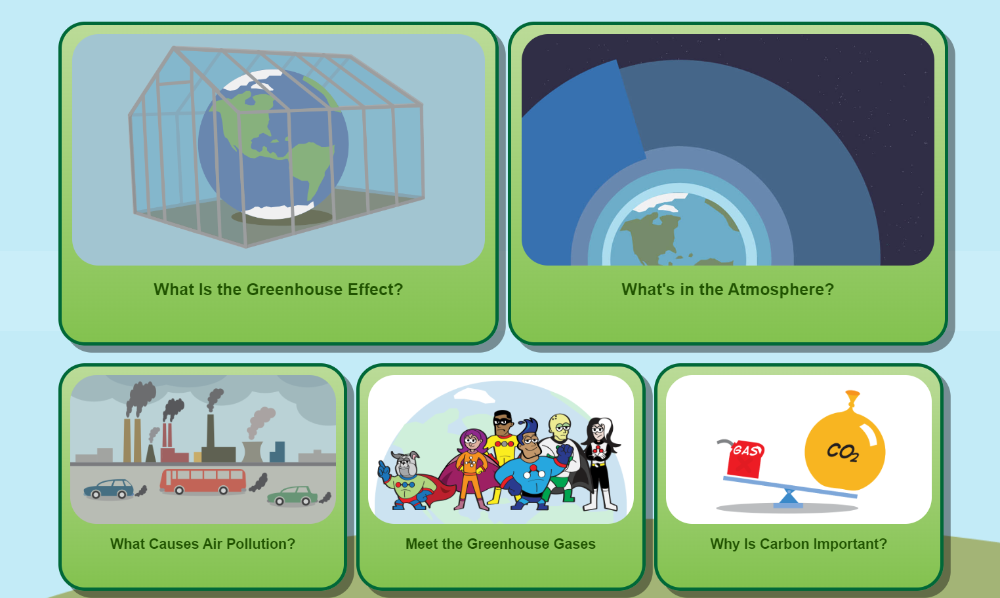
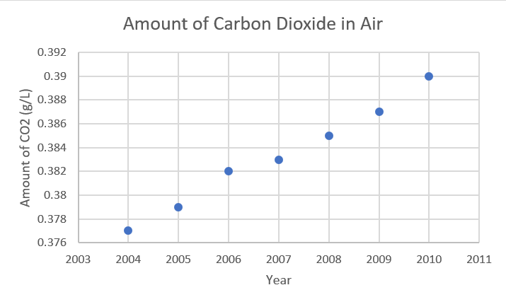
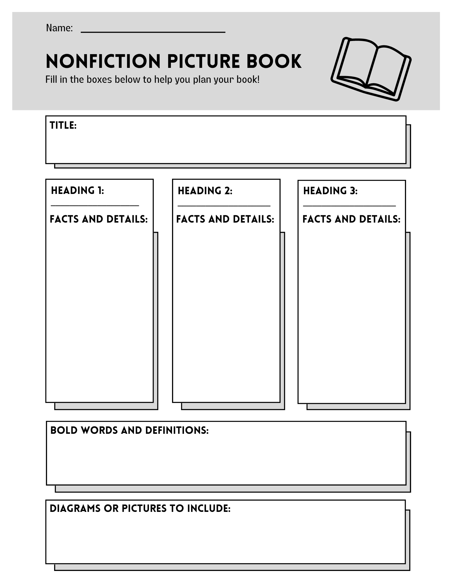

Do It! Climate Kids: Global Warming Picture Book
 The Challenge
The Challenge
Your challenge is to research information about global warming, air pollution, and greenhouse gases using the Climate Kids website. You will collect data on how greenhouse gases in the atmosphere have changed over time to affect climate change and will use this information to make a graph. Then, share what you have learned by writing a physical or digital nonfiction picture book to teach younger students about the impacts of global warming.
Project Steps
-
Explore Information
-
Collect Data and Create a Graph
-
Make an Outline
- Write Your Rough Draft Book
- Write Your Final Draft
Explore Information
Use the Climate Kids website and explore different articles, videos, and activities to help you learn about global warming. This is the information you will be using to help you write your book. You may find it helpful to take notes and write down important facts for you to look back at later on. In your book you will include a graph of changing CO2 levels. Make sure you understand how carbon dioxide relates to global warming by focusing on the atmosphere webpage. Start by exploring the following sections:
- Meet the Greenhouse Gases
- What is the Greenhouse Effect
- What’s in the Atmosphere
- The Climate Time Machine

Collect Data and Create a Graph
Now that you have learned all about climate change and global warming, dive a little deeper. Research the amount of CO2 (a greenhouse gas) that has been in the atmosphere over the past 10 years and make a line graph to display this information. CO2 concentrations are presented in ppm (g/mL) and you will be required to convert this to mg/mL. This graph is going to be used as part of the scientific data that you include in your book.
To make your graph you will begin by first making a data table.
To make your data table:
- Create a table with 3 columns and 11 rows (see example below). You can draw your table by hand or make a file in Google Sheets or Excel and enter the data.
- Label 1 column - Year, 1 column - Amount CO2 mg/L, and 1 column - Amount CO2 g/L (this is where you will use conversions)
- In the Year column: start with the current year and write the year before that until all rows are labeled. NOTE: When you collect data make sure you are looking at the same month for every year.
- Use the visualization to find the amount of CO2 in the air for each year and write it in the amount of CO2 mg/L column. NOTE: remember that ppm can also be labeled mg/L.
- Use your math knowledge to convert from mg/L to g/L for each year. You may want to grab another piece of paper to show your work.
|
Year |
Amount CO2 mg/L (ppm) |
Amount CO2 g/L |
|---|---|---|
|
2010 |
390 |
0.390 |
|
2009 |
387 |
0.387 |
|
2008 |
385 |
0.385 |
|
2007 |
383 |
0.383 |
|
2006 |
382 |
0.382 |
|
2005 |
379 |
0.379 |
|
2004 |
377 |
0.377 |
After your data table is complete then you are ready to plot your information on a graph.
To make your graph:
- Review your data table to decide what type of graph would best show your data. You are showing change over time so a line graph could be a good fit.
- Label your x and y-axis.
- Plot your points on your graph.
- Give your graph a descriptive title.

Write Your Book Outline
The next step in your project is to write the outline for your book. Remember, the outline is the “map” that you will use to guide you when you begin to write so you want it to be detailed. This will help you later on when you begin writing your book.
Begin by thinking about how you want to write your book. Do you want it to be a physical book or a virtual book? If it is a virtual book, what program will you use to create it? Book Creator? Comic Bookish? Another?
After you have decided on the book type, think about what topics should be included in your book. Look back at the notes that you took to help you. This book is to teach younger students about global warming, so any information that will help them understand should be included. Remember, you have already made the CO2 graph to include in your book, so one of your topics should be related to greenhouse gases.
Your outline should include:
- At least three topics (headings that you will be writing about)
- 3 Important facts or details about each heading
- Important vocabulary (bold words)
Some topics you may want to consider are:
- What is climate change?
- What is global warming?
- How does global warming happen?
- What are the different types of greenhouse gases?
- Why is the greenhouse effect harmful?
- How have humans contributed to global warming?
- How can people help?

Write Your Rough Draft
Now it is time to begin writing your book. You will use the information that you provided in your outline to help you. Your topics represent the headings or, larger sections, that you will be writing about. You will use the facts that you presented in your outline, your notes, and Climate Kids website to help you fill in extra information. Keep in mind that this is a book for younger students so try to keep it simple and leave room for plenty of detailed pictures. This is your rough draft, but the more effort that you put into it the less editing you will have to do. It is not required but it is a good idea to go ahead and draw or plan out the pictures that you will want to include on each page of your book.
Your book should include:
- Table of Contents
- Glossary
- Headings/Topics (at least 3)
- Pictures
- Your CO2 Graph
- Bolded Vocabulary Words
After you have finished your rough draft you will read back through what you have written and make edits. As you are editing keep in mind:
- Is this information relevant?
- Did I use complete sentences, punctuation, and capitalization?
- Is any information missing that needs to be added?
- Does my book say what I want it to say?
- Is my book organized?
- Does my book make sense?
If time allows, you may also want a classmate to read through your book and give you notes. This is a process called peer editing and is used by most authors to ensure their writing is the best that it can be.
Write Your Final Draft
It is now time to make your final draft. Your final draft will be similar to your rough draft, but it is more polished and edited to be the very best version. You will use your rough draft and any edits you made or feedback your classmates provided to help you write your final draft. Remember, this is the final version so you also want to make sure you have included all of your required features, the information makes sense and is organized, and you have a picture on every page (it is a picture book)! When you have finished your final draft read back through it to make sure it looks exactly how you would like for it to look.